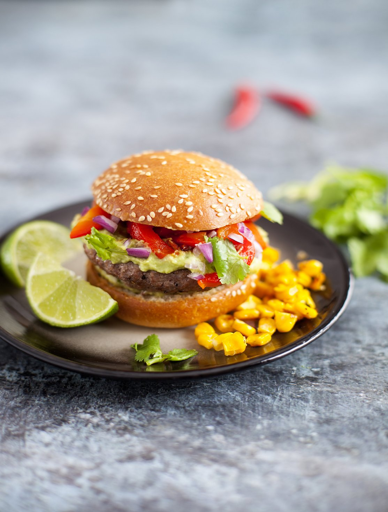

С домашним бургером не сравнится никакой бургер из ресторана. Самая простая классическая котлета для бургера состоит из хорошей говядины, соли и перца. Качественное мясо — 99% успеха! Фарш обязательно должен быть свежесмолотым. Лучше всего брать для фарша филейную часть: верхнюю часть бедра, лопатку. В хорошем бургере важны не только котлета и булка, но и правильный соус. Самые базовые — домашний кетчуп и «1000 островов».